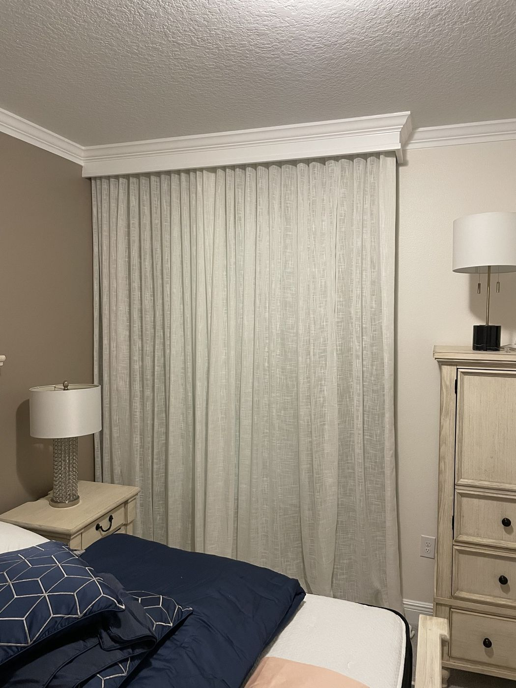
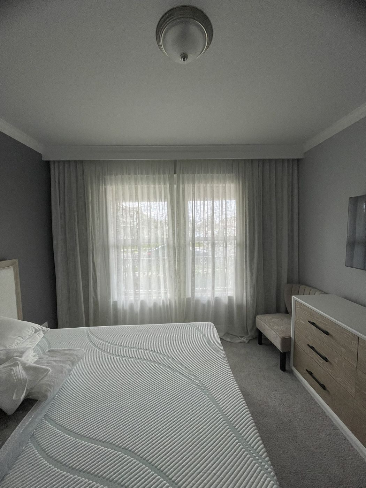
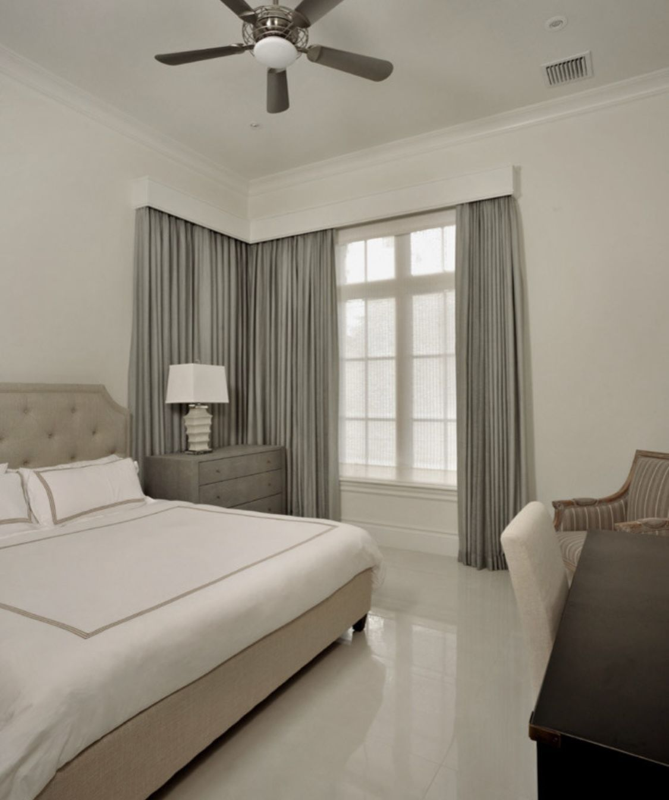

Cornice & Layered Drapery · Florida
The built-in look that makes a room feel custom from wall to ceiling.
A cornice hides the hardware, frames the window and ties your drapery into the crown molding like it was designed with the house. TheKingOfDrapes builds and installs the cornice and the curtains together, so everything lines up, and you pay one fair price for one finished window.
Message Us on WhatsAppOr text us at (813) 500-0143 to book your free in-home estimate. No cost. No obligation.

Why most windows look unfinished
- Exposed rods, rings and brackets that cheapen the room
- A gap of light leaking over the top of the curtain
- Drapes that stop short of the ceiling and shrink the wall
- Hardware that fights with your crown molding
Cover the top. Finish the room.
A cornice is a clean, painted box mounted above the window. The curtains hang from behind it, so all you see is fabric falling from a crisp architectural line. Add sheers behind and fuller panels at the sides, and you control light through the day: open, filtered or closed.
Real homes. Real installs.
See it hanging, not in a catalog


Perfect for: Primary and guest bedrooms, nurseries, living rooms and any window you want to look intentional.
Style inspiration
Looks we can build for you
Reference photos to help you choose a style. These are not TheKingOfDrapes installations.

Why homeowners choose this style
Hidden hardware
No rods, no rings, no brackets on show.
Blocks top light
The cornice closes the gap above the curtain.
Layer it your way
Sheers alone, or sheers with side panels.
Matched to your trim
Sized and finished to sit with your molding.
Our promise
The best service at the best price. In writing.
Big-box panels are cheap because they are made for nobody's window. Designer showrooms are expensive because you pay for the showroom. TheKingOfDrapes does one thing: custom window treatments, made for your exact opening and installed by the people who measured it. You get the custom result without the designer markup, and a written quote before any work begins.
Get My Free Quote on WhatsAppThree steps to a finished room
We come to you
A free in-home visit to measure every window and show fabric samples in your own light.
You get a written quote
One clear price for fabric, making and installation. You decide with no pressure.
We install it
Our team hangs, levels and dresses every fold. You come home to a finished room.
Questions, answered
Can the cornice match my existing crown molding?
That is the goal. We look at your trim during the in-home estimate and design the cornice to sit with it, in size and in finish.
Can I have sheers and heavier drapes together?
Yes. Layering is one of the main reasons people choose a cornice. Both layers hang behind it and move independently.
How much does it cost?
Every window is different, so we price after measuring: your exact width, height and fabric. The in-home estimate is free and the quote is written, with no surprise charges on install day. Our promise is simple: the best service at the best price. If you have another quote, show it to us.
Which areas do you serve?
We work with homeowners across Florida. Request your estimate and we will confirm the next available date in your area.
How long does it take?
You get a clear timeline with your written quote, before you commit to anything.
Do you install?
Yes. Measuring, making and installing are all handled by us, so one team is responsible for the result.
Free in-home estimate
Find out what your windows would cost. Free.
Send us a WhatsApp or a text with your city and what you have in mind. We will schedule a visit, measure everything and give you a written price. If you love it, we get to work. If not, you have lost nothing.
Book your free visit in one message
Message Us on WhatsAppText Us(813) 500-0143
WhatsApp or text this number. Tell us your city and which rooms, and we will schedule your free in-home estimate.